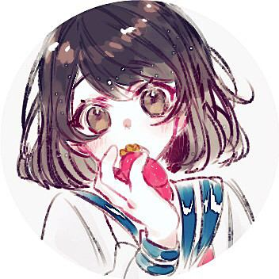
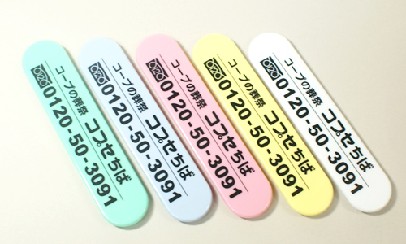
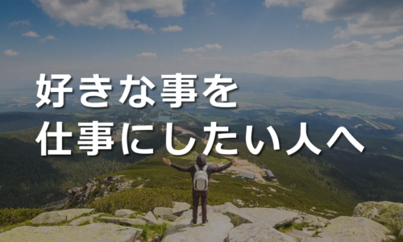

あめのひ
2017/10/22 22:31雨が降っている。大雨にはしゃぐ子供みたいに二羽のカラスが飛んでる。気付けのコーヒーのような気の利いたものは家に備わっていないので、なんとなくソファの上でまどろむ。家の中で雨が窓を叩く音を聴くのが好きだ。人間としての機能が鈍っていても許される気がするから。交通機関が混乱しているニュースを目にしたのを最後に、鈍痛がする頭の重みに身を任せて、深く沈み込むように目を閉じる。心身ともに疲れているときは眠るに限る。必要なあれこれをなんもかんも後回しにして、願わくば目覚めたら小人が全て仕立てあげてくれていることを期待しながら眠る。
瞼の中でいろいろなことを想像する。ディズニー映画「ヘラクレス」を思い出す。ラストシーン、ヘラクレスとメグはあの後人間界でどういう生活を送るのだろうか？ヘラクレスは少なくともあの父親のいる神様の世界で生きるより幸福だろう（死の概念が存在しない「神様の世界で生きる」というのは語義矛盾かもしれない）。優れた映画を見ているとき、切り替わるカットの間で省略された世界において、または緞帳が下りたラストシーンの向こう側で、登場人物たちは何を見て何を考えて何を言葉にしているのか、気になって仕方がなくなるときがある。そういうときは映画の本筋はそっちのけになり、「この映画面白かったけどあんまり憶えてない」という結果が残ってしまい、一緒に観に行った人間に不可解なものを見るような目で見られてしまう。
イメージは無限だと人はいう。好きな漫画にも書いてありました。瞼の中で心地よい世界を想像するためにイメージを取捨選択する。誰も傷つくことのない楽しい世界を想像する。なんか全部面倒くせえ毎日から逃げるようにして夢を見る。美しいイメージだけで構築された夢は、自分の意識が届かない領域に下りていき、いずれ自分の手綱から外れて身勝手な方向へと進んで行く。ハッピーだったイメージはどんどん雲行きが怪しくなっていき、どんどん血生臭いイメージに侵食されていき、最悪の結果に辿り着きそうになってしまうので、コンクリートに頭を打ち付けるようにして目を覚ます。
雨が降っている。カラスは見当たらない。夢の中にも居場所がないことに諦めをおぼえて、しぶしぶ面倒な生活を始める。だいたい毎日そんな感じ。
ベイクドパンケーキ
2017/9/10 08:34なんか気がついたらまた夏が終わってて外が涼しい。このブログを読み返してみると「夏が終わる」ことに対してよく言及していて、この時期は自分の中でも結構特別な存在らしい。自分のことって案外よくわからない。他人に教えてもらうこともよくある。
新しいアルバムがでます。11月1日にでます。「BOOTLEG」というタイトルです。今日それの最後のrecがあるんだけど、最後にして一番重要なrecになると思う。とても楽しみだ。これ多分めちゃくちゃいいアルバムだよ。自信を持って言える。毎回言ってる気がするけど。
二ヶ月ぶりくらいに家に帰った。作業になると作業場に缶詰になってしまう。誰かに強いられているわけでもなく、そうしていないと落ち着かないから。音楽に呪われていると思う瞬間がある。何をしていても音楽のことを考えてしまう。何を見ていてもその奥に言葉やメロディーが隠れていないか探そうとしてしまう。健全な精神と肉体があればそれに越したことはないと思う。しかしどうにも音楽に生気を吸い取られていく感覚が離れない。そういう悪癖のせいで周囲の人間を傷つけてきたなと後悔する。でも選んだのは自分なので仕方がない。楽しいんだよ音楽って。やめらんないんだよどうしても。
とにかく色々と疲れていて、ドバイやらハワイやらなんかハッピーそうなところ（すいません）に移住できないか思案していた時期に、誰かとの待ち合わせのような顔をして街の往来をぼーっと眺めていたことを思い出す。右から左に左から右に通り過ぎていく一人一人の内側に、数十年分の経験と記憶がギチギチに詰まっていることを想像して、その膨大な情報量にクラクラしていたこと。120パーセント話がかみ合わないような人たちとの間にも存在する共通項が、その膨大な分母の中に一体いくつあるのか探していたこと。計画性のないバトル漫画のようなインフレした数字を前にして笑ってしまう。笑っているうちに、そもそも本当に存在するのかどうかもわからないものを血眼になって探している自分を発見して馬鹿らしくなる。宇宙はでかい。エウロパに生物がいるのかどうか確かめる術はないけど「いる」と思って生きたほうが面白い。自然に死ぬまでの間に見つかったらいいなあと思いながら、その日はコンビニでコーヒー買って帰った。
暇
2017/8/17 08:59歌詞を書いてる。歌詞。こういう正解が捉えづらい作業はただひたすら手を動かしていればいいものでもないので、思い浮かばない時は身体的な全ての機能がストップしてしまう。そういう時はひとえに遊んだ りすることも大事なのだが、それを見るにつけ「あいつは仕事を放棄している」と勘違いされてしまうのは悲しい。端から見るとどっちも同じだからそれは勘違いされても仕方がないのだけど、自分としてもこの遊びが生産的なものなのかどうかという内省を続けながら遊ばなきゃいけないので、結局頭のなかではいろんなことを考えていてうまく遊べなかったりする。 「何も考えない」というのは健康的に創作を続ける上でけっこう重要な能力だと思う。ある程度の楽観的視点を持っていないと心身がもたない。というわけで僕はいまほとんどオートマチックにこの文章を書いている。ガッシャンガッシャン。皆さん元気ですか？いまオートマチックという言葉からサイバーパンクっぽいロボットがカタカタキーボードを打ってる姿を連想したんだけど、昨今のAI技術の興隆からしてロボット=無機的という イメージも古くなってきているのかもしれない。いや、そんなに知らないけれど。感情というものの正体も早く解明されてほしい。言語化が不可能な領域を人間はまだ持っていて、そういう混沌の空間が芸術の領域として守られているのだろうけど、そこらへんをなんかエーアイとか機械とかにこじ開けられたらどうなるだろう？いま僕らが必死こいて作ってる音楽も、ボタンをポチっと押すだけでその日その時の気分に合ったものを一瞬で自動生成できるような未来を想像する。そういうのを見て自分はどう思うだろう？こんなもん音楽じゃない！と思うだろうか？なるほどこうなったか〜と好意的もしくは自然なものとして受け入れられるだろうか？だいたいの人間は思春期に存在したテクノロジーを自然なものと して扱い、それ以降に登場したテクノロジーは自然の摂理から外れたものとして扱う傾向にあるらしい。レコードの音は暖かく、MP3の音はくだらない（それがいい悪いとかいう話ではなく）。絶対的な点数が出るわけでもなく、その大部分を好きか嫌いかで判断しなくてはならない芸術の領域は、そもそも優劣が存在しないと勘違いされがちだ。設定されたコンセプトをいかに精密に再現できるか。優れた批評の目を持っていないとそもそものコンセプトを見誤ってしまう。青い絵に「この絵は赤くないから駄目だ」と評価してしまう。そうならないためには、ある程度の教養と、作家であると同時に批評家としての側面も持ち合わせていないといけないんだけど、わたくしまともな教育を受けていないので呆然としてしまう瞬間がよくある。その昔まだ自分が小さいころ、親が近所の人に「うちの息子は全然駄目で〜」 みたいなことを言ってる姿を見て、お前が育てたんちゃうんか、と憤ったことを憶えている。それ以来こういう謙遜文化は悪だなと思うようになったので、自分が作った音楽にはいつだって胸を張って「美しい」と言ってやろうと思っている。むろん美しくないものを出してるつもりもないけど。なんの話をしてたっけ？多分このブログめっちゃ読みにくいな。

越湖 亜実
過去記事一覧
- あめのひ
- ベイクドパンケーキ
- 暇
- drunk
- 郵便受け
- 記憶
- 酩酊

